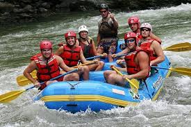
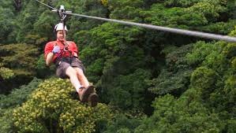
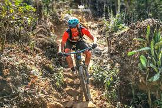

Actividades de Turismo de Aventura
En Geonatura, ofrecemos una experiencia única para los amantes de la adrenalina y la naturaleza. Te invitamos a disfrutar de actividades emocionantes que te conectarán con los paisajes más espectaculares de Guatemala, todo mientras respetamos el medio ambiente y fomentamos el turismo sostenible. Ya sea que busques explorar el territorio de manera activa o vivir experiencias extremas, tenemos la opción perfecta para ti.
Rafting en el Río Cahabón
Descripción: Navega las aguas turbulentas del Río Cahabón, uno de los ríos más espectaculares para el rafting en Guatemala. Rodeado de exuberante naturaleza, esta experiencia te desafiará mientras disfrutas de un paisaje impresionante.
Precio: Q400 por persona (incluye equipo, guía y transporte).

Canopy y Tirolesa en la Selva de Petén
Descripción: Experimenta la emoción de volar sobre la selva con un canopy que te permite observar la biodiversidad desde las alturas. Ideal para aquellos que buscan una aventura ligera pero impresionante.
Precio: Q250 por persona (incluye equipo y guía).

Ciclismo de Montaña en el Volcán de San Pedro
Descripción: Un recorrido en bicicleta de montaña a través de los senderos del Volcán de San Pedro, donde se puede disfrutar de la impresionante vista del Lago de Atitlán y sus alrededores.
Precio: Q350 por persona (incluye bicicleta, guía y transporte)

para saber mas sobre esto visita nuestro catalogo